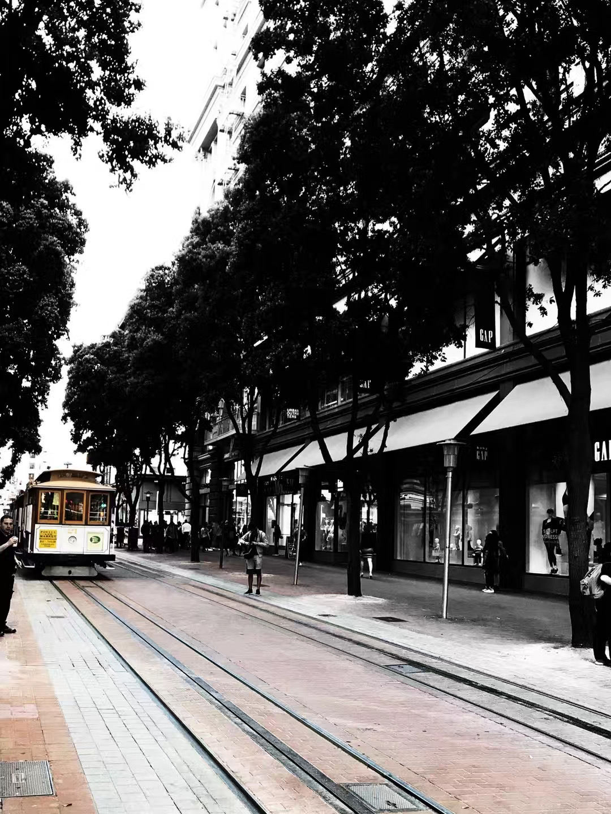
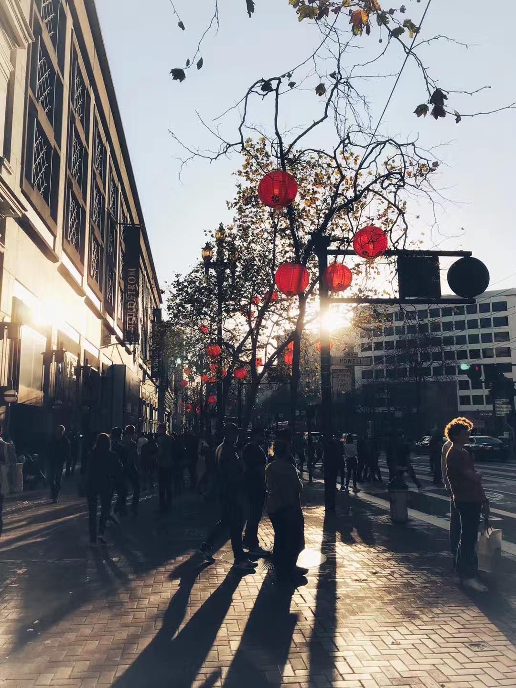
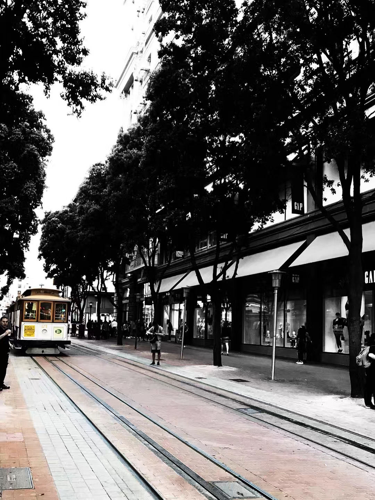
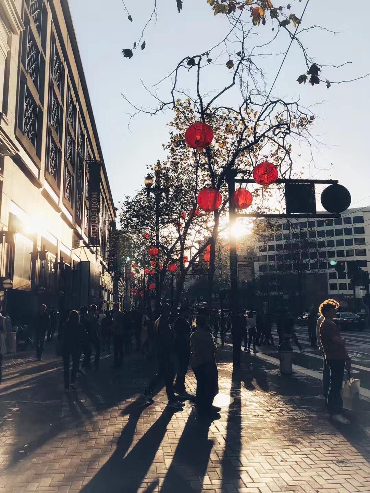

Hi. I'm Yuyan Wang.
I am currently at Google Brain, applying machine learning techniques to analyze and improve long-term consumer experience on personalization platforms. I received my Ph.D. in statistics from the Department of Operations Research & Financial Engineering at Princeton University, where I was fortunate to be advised by Prof. Jianqing Fan. Before Princeton, I received my Bachelor’s degree in statistics from the Special Class for the Gifted Young at University of Science and Technology of China (USTC). Please feel free to check out my CV, research, teaching/mentorship, Google Scholar, Github, blogs (in Chinese), or contact me.
I am excited to share that I will be joining Stanford Graduate School of Business as an assistant professor of marketing on July 1st!
Learn about what I do

 


